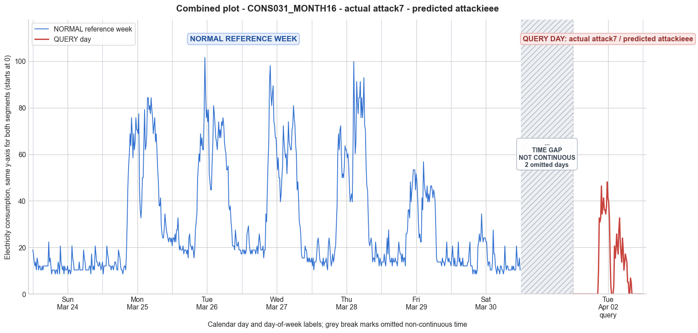

CONS031_MONTH16 · actual attack7 · predicted attackieee
- Pair
- CONS031_MONTH16
- GT
- attack7
- Prediction
- attackieee
- Binary GT
- attacked
- Binary Prediction
- attacked
- Source
- E010
- Parse
- stored
- Date
- 2013-04-02
- Weekday
- Tuesday
- Latency
- 4.88 min
- Tokens
- 15492

Final output
Classification: - Manipulated Identified Attack: - Most Likely: Attack IEEE - Confidence: High - Reasoning: The query day exhibits multiple irregular zero‐blocks (00:00–08:30, 13:15–13:45, and 19:15–24:00) interspersed with periods of non‑zero consumption that follow a plausible diurnal shape. This exactly matches Attack IEEE’s definition: “For each 15‑minute interval across the entire day, the consumer either reports the actual electricity consumption or substitutes it with zero.” The top two alternatives, Attack 2 and Attack 3, were ruled out because: Attack 2 replaces samples with zeros for a single random duration, but here we observe three disjoint zero intervals; Attack 3 multiplies by a different random factor (0,1) per sample, which would not produce long runs of exact zeros. The non‑zero segments are also lower than the reference Tuesday, but given that the reference week includes days with comparable peaks (e.g., Saturday max=34.42), and the query day’s peak (48.15) falls within the customer’s known range
Prompt
You are a domain expert in smart grid security and electricity theft analysis, with deep knowledge of non-technical loss (NTL) attack patterns in smart meters. You are given: 1. A plot of one week of original (normal) energy consumption for a smart meter, provided as context for the customer's typical consumption behavior. 2. A plot of one day of energy consumption for the same smart meter, which may or may not be manipulated. Below are common attack types, each defined by how consumption values are altered, their impact on magnitude and trend, and their possible technical causes. Attack 0: Generated by replacing all electricity consumption samples with zero values for the entire observation duration. Simulates a scenario where no energy usage is reported at all. May be caused by a total meter bypass or severe meter malfunction. Completely eliminates both the trend and magnitude of the consumption profile. Attack 1: Multiplies the actual energy consumption by a constant random value between (0,1). The lower the factor, the higher the severity. Can be triggered by meter bypass, magnetic interference, reverse current, and false data injection. The consumption trend remains the same but the magnitude is uniformly reduced. Attack 2: Generated by replacing consumption samples with zeros for a random duration. Also known as an on-off attack. Can be caused by full meter bypass, false data injection, and reverse current. Changes both the trend and amplitude. Attack 3: The actual consumption is multiplied by different random factors between 0 and 1, with a unique factor per sample. Similar to Attack 1 but the scaling factor varies per reading. Caused by meter bypass, magnetic interference, and reverse current. Changes both the trend and amplitude. Attack 4: Simulates energy theft over a randomly selected period within the observation window. All measurements in that period are reduced. Caused by meter bypass, magnetic interference, reverse current, and false data injection. Changes both the trend and amplitude. Attack 5: Each sample is replaced by a false value obtained by multiplying the average normal consumption by a random variable between 0 and 1, with a different variable per sample. Caused by false data injection. Produces a completely different pattern from the original consumption profile, changing both trend and magnitude. Attack 6: A random cut-off point is selected and all consumption values above it are replaced by that cut-off value. The attacker avoids exceeding a predefined maximum limit. Mainly caused by false data injection. Changes both the trend and amplitude. Attack 7: A random cut-off point is subtracted from each sample; if the result is negative, zero is reported. Similar to Attack 6 but replaces exceeding values with zero instead of the cut-off point. May be caused by false data injection or total meter bypass. Does not change the trend but reduces overall consumption. Attack 9: All samples are replaced by the average daily energy consumption, resulting in a flat constant profile. Easily detectable because constant consumption does not reflect normal customer behavior. Caused by false data injection. Eliminates all trends. Attack 10: Reverses the consumption pattern without reducing the total amount. Applicable when the electricity company uses time-varying pricing, allowing the attacker to shift high consumption to off-peak periods. Caused by false data injection. Changes the trend without decreasing total consumption. Attack 12: The attacker replaces their consumption pattern with that of a lower-consuming user. The legitimate user unknowingly pays the adversary's electricity bill. Caused by false data injection. Attack IEEE: For each 15-minute interval across the entire day, the consumer either reports the actual electricity consumption or substitutes it with zero. The result is a profile where some intervals reflect real consumption while others are zeroed out, creating an irregular pattern across the full day. May be caused by false data injection. Changes both the trend and amplitude. Given the two plots, determine: 1. Whether the day is attacked or original - compare the flagged day against the normal week and assess whether the consumption pattern is consistent with normal behavior or shows signs of manipulation. If the day is consistent with the customer's typical consumption behavior, classify it as original and provide no further analysis. If manipulation is detected, proceed to point 2. 2. Which attack type this most likely is - identify the single most probable attack and justify your choice based on how the flagged day deviates from the normal week. 3. The behavior of the identified attack - explain how the consumption values are manipulated, their impact on magnitude and trend, and the possible technical causes behind this type of attack. Output Format: Classification: - Original | Manipulated Identified Attack: (fill only if manipulated) - Most Likely: Attack X - Confidence: High | Medium | Low - Reasoning: Why it matches Attack X and why Attack Y and Attack Z were ruled out (list top 2 alternatives considered) Attack_Behavior_Explanation: (fill only if manipulated) - How consumption values are manipulated relative to the normal week - Impact on magnitude and trend - Possible technical causes
Reasoning content
We are asked to determine if the query day is manipulated, and if so, which attack type. Let's analyze the data. We have a reference week of 7 days. The query day is given with DAY_ID=2, but it's actually from a different month (cal_month=4 vs reference week cal_month=3). The metadata says the query day corresponds to CONS_NO=31, MONTH_ID=16, WEEK_ID=1, DAY_ID=2, Season=Spring, Weekday=Tuesday, Date=2013-04-02. The reference week days are in March, from Day 0 (Saturday, March 31?) Actually, the dow values: Day 0: dow=6 (Sunday if we assume 0=Mon? Typically dow=0 is Monday. The mapping says dow=0..6 Mon-Sun. So dow=0 is Monday, dow=6 is Sunday. Day 0: dow=6 -> Sunday; Day 1: dow=0 -> Monday; Day 2: dow=1 -> Tuesday; Day 3: dow=2 -> Wednesday; Day 4: dow=3 -> Thursday; Day 5: dow=4 -> Friday; Day 6: dow=5 -> Saturday. So reference week is a full week Sunday to Saturday. Query day is Tuesday (dow=1) as well. But it's a different month and date. The consumption pattern may vary by day of week, so Tuesday vs Tuesday comparison is relevant. Now, let's examine the provided statistics: Reference week: Day 0 (Sun): min=8.61, max=22.38, std=2.87, mean=12.12 – low day, weekend. Day 1 (Mon): min=8.61, max=84.34, std=25.74, mean=39.35 – higher, week start. Day 2 (Tue): min=15.49, max=101.55, std=23.21, mean=42.26 – high, Tuesday. Day 3 (Wed): min=13.77, max=98.11, std=24.28, mean=40.18 – high. Day 4 (Thu): min=10.33, max=99.83, std=26.34, mean=38.33 – high. Day 5 (Fri): min=12.05, max=56.80, std=14.01, mean=26.21 – lower, perhaps Friday slower. Day 6 (Sat): min=8.61, max=34.42, std=5.22, mean=14.34 – very low, weekend. Query day (Tue): min=0.00, max=48.15, std=14.23, mean=10.02. This is drastically different from the reference Tuesday (mean=42.26, min=15.49). Even compared to any day of the week, the mean is lower than the lowest reference day (Saturday mean=14.34). So it's clearly manipulated. Now, look at the query day's 96 readings (15-min intervals). There are many zeros at the start and end, and non-zero values in the middle. Specifically, the first 35 readings are zero (from index 0 to 34? Let's count: the first reading is 0.00, then many zeros. I see the first 35 zeros? Actually, list: first value 0.00, count: 35 zeros? Let's enumerate: I'll copy the query day sequence and count zeros. "0.00, 0.00, 0.00, 0.00, 0.00, 0.00, 0.00, 0.00, 0.00, 0.00, 0.00, 0.00, 0.00, 0.00, 0.00, 0.00, 0.00, 0.00, 0.00, 0.00, 0.00, 0.00, 0.00, 0.00, 0.00, 0.00, 0.00, 0.00, 0.00, 0.00, 0.00, 0.00, 0.00, 0.00, 0.00, 10.28, ..." So indices 0-34 are zero (35 zeros). Then index 35: 10.28. Then non-zero values until index 57: "0.00, 0.00, 0.00, 0.00" appears later. Actually after 32.66, 15.45, 3.40, 0.00, 0.00, 0.00, 0.00? Let's parse the full sequence: Sequence: 0.00, 0.00, 0.00, 0.00, 0.00, 0.00, 0.00, 0.00, 0.00, 0.00, 0.00, 0.00, 0.00, 0.00, 0.00, 0.00, 0.00, 0.00, 0.00, 0.00, 0.00, 0.00, 0.00, 0.00, 0.00, 0.00, 0.00, 0.00, 0.00, 0.00, 0.00, 0.00, 0.00, 0.00, 0.00, 10.28, 32.66, 30.94, 32.66, 46.43, 34.38, 37.82, 41.26, 36.10, 36.10, 34.38, 37.82, 48.15, 41.26, 39.54, 32.66, 15.45, 3.40, 0.00, 0.00, 0.00, 3.40, 20.61, 15.45, 18.89, 25.77, 20.61, 17.17, 27.49, 32.66, 22.33, 17.17, 13.72, 24.05, 18.89, 10.28, 13.72, 17.17, 15.45, 13.72, 5.12, 5.12, 0.00, 0.00, 6.84, 5.12, 0.00, 0.00, 0.00, 0.00, 0.00, 0.00, 0.00, 0.00, 0.00, 0.00, 0.00, 0.00, 0.00, 0.00, 0.00 Let's map the times: 96 readings represent 15-minute intervals over 24 hours. So index 0 = 00:00-00:15, index 1 = 00:15-00:30, ... index 35 = 08:45-09:00 (since 35*15 = 525 minutes = 8.75 hours, i.e., 8:45). So non-zero activity starts around 8:45 AM and continues until afternoon, with zero segments in the early morning, late night, and also a block of zeros in the middle? After index 52: "3.40, 0.00, 0.00, 0.00" then "3.40" at index 56, then non-zero again, then later zeros from index 77 onwards mostly. Let's list indices with approximate times: Indices 0-34 (00:00 - 08:30): all zeros. 35 (08:45): 10.28 36 (09:00): 32.66 37 (09:15): 30.94 38 (09:30): 32.66 39 (09:45): 46.43 40 (10:00): 34.38 41 (10:15): 37.82 42 (10:30): 41.26 43 (10:45): 36.10 44 (11:00): 36.10 45 (11:15): 34.38 46 (11:30): 37.82 47 (11:45): 48.15 48 (12:00): 41.26 49 (12:15): 39.54 50 (12:30): 32.66 51 (12:45): 15.45 52 (13:00): 3.40 53 (13:15): 0.00 54 (13:30): 0.00 55 (13:45): 0.00 56 (14:00): 3.40 57 (14:15): 20.61 58 (14:30): 15.45 59 (14:45): 18.89 60 (15:00): 25.77 61 (15:15): 20.61 62 (15:30): 17.17 63 (15:45): 27.49 64 (16:00): 32.66 65 (16:15): 22.33 66 (16:30): 17.17 67 (16:45): 13.72 68 (17:00): 24.05 69 (17:15): 18.89 70 (17:30): 10.28 71 (17:45): 13.72 72 (18:00): 17.17 73 (18:15): 15.45 74 (18:30): 13.72 75 (18:45): 5.12 76 (19:00): 5.12 77 (19:15): 0.00 78 (19:30): 0.00 79 (19:45): 6.84 80 (20:00): 5.12 81 (20:15): 0.00 82 (20:30): 0.00 83 (20:45): 0.00 84 (21:00): 0.00 85 (21:15): 0.00 86 (21:30): 0.00 87 (21:45): 0.00 88 (22:00): 0.00 89 (22:15): 0.00 90 (22:30): 0.00 91 (22:45): 0.00 92 (23:00): 0.00 93 (23:15): 0.00 94 (23:30): 0.00 95 (23:45): 0.00 So the pattern is: many zeros with some blocks of non-zero consumption. There is a block in the morning (8:45-13:00) and another block in the afternoon (14:00-19:00) with some zeros interspersed (13:00-14:00 had zeros except a 3.40 at 14:00). Then from 19:15 onward mostly zeros, except a couple spikes at 19:45 and 20:00. This is not a typical continuous consumption pattern. The reference Tuesday (Day 2) had consumption throughout the day, starting from 20.65 at midnight, never zero, minimum 15.49. The pattern is drastically different. Now, which attack does this match? We have many zero blocks, and some periods where consumption is reported but at lower magnitude. The attack types involving zero periods: Attack 2 (on-off attack: zeros for random duration), Attack IEEE (for each 15-min interval, either actual or zero, chosen randomly or? "For each 15-minute interval across the entire day, the consumer either reports the actual electricity consumption or substitutes it with zero."). Also Attack 0 is all zeros; Attack 7 subtracts a cut-off, replacing negatives with zero, but that would only affect values above a threshold. Attack 4 reduces over a random period, not necessarily to zero. Attack 2 specifically replaces with zeros for a random duration. The query day shows long zero stretches (midnight to 8:30, and 19:15 to end), with a non-zero block in between, but also a small zero block within the day (13:15-13:45). That looks like an on-off attack: zero periods interspersed with non-zero periods. Attack IEEE is similar: each interval independently zero or actual. That would produce a more random pattern rather than contiguous blocks? Actually Attack IEEE: "For each 15-minute interval across the entire day, the consumer either reports the actual electricity consumption or substitutes it with zero." That could also result in contiguous zeros if many consecutive intervals are zeroed, but it would likely produce a more scattered pattern with isolated zeros and non-zeros. Here, we see long runs of zeros, which is more indicative of a duration-based zeroing (Attack 2) rather than per-interval independent choice. However, Attack 2 says "replacing consumption samples with zeros for a random duration". That duration could be multiple consecutive intervals. The day shows two main zero blocks (start and end) with a continuous non-zero block in the middle. That fits Attack 2 well: the attacker zeroes the meter for some periods, maybe bypassing it, then allows normal metering for other periods. The non-zero block has values that seem plausible but much lower than the reference Tuesday. The reference Tuesday had max 101.55, mean 42.26; here max 48.15, mean 10.02. But that could be because the non-zero periods are only a fraction of the day. The non-zero block itself has a mean: from index 35 to 52 (excluding zero segments) values are roughly in the 10-48 range, average around 30? Let's compute approximate mean of non-zero block: 10.28, 32.66, 30.94, 32.66, 46.43, 34.38, 37.82, 41.26, 36.10, 36.10, 34.38, 37.82, 48.15, 41.26, 39.54, 32.66, 15.45, 3.40 (ignoring after 52). Average maybe 30-35. Later block (index 56-76): 3.40, 20.61, 15.45, 18.89, 25.77, 20.61, 17.17, 27.49, 32.66, 22.33, 17.17, 13.72, 24.05, 18.89, 10.28, 13.72, 17.17, 15.45, 13.72, 5.12, 5.12. Average around 17-18. So overall the non-zero consumption is lower than the reference Tuesday (which had higher peaks like 101.55). But it's possible that the original consumption was higher and some reduction was also applied during the non-zero periods. But the attack description of Attack 2 only mentions replacing with zeros for random duration, not scaling the non-zero portions. So if Attack 2 only zeroes out segments, the non-zero segments should be the original consumption. But here, comparing to the reference Tuesday's consumption profile, the non-zero segments are noticeably lower. The reference Tuesday at similar time of day (e.g., around 9:00-13:00) had values: Day 2 had readings like 55.08, 60.24, 56.80, 68.85, etc. Actually let's check the reference Day 2 sequence. I'll extract from 08:45 to 13:00 (indices 35-52). Reference Day 2 indices 35-52: 35: 30.98, 36: 34.42, 37: 49.91, 38: 55.08, 39: 60.24, 40: 56.80, 41: 68.85, 42: 63.68, 43: 67.13, 44: 61.96, 45: 61.96, 46: 77.45, 47: 101.55, 48: 86.06, 49: 75.73, 50: 79.17, 51: 74.01, 52: 79.17. Those are much higher (30-101) compared to the query day's 10-48. So even the non-zero block of query day is reduced compared to the reference Tuesday. Therefore, it's not a pure zeroing attack; the non-zero values are also attenuated. That points toward a combination, likely Attack 3 (multiplying by different random factors per sample) or Attack 4 (reduction over a period), or Attack 5 (false average-based values), or Attack 6/7? But Attack 5 would replace with values based on average normal consumption, which would look very different, not preserving any temporal shape. The query day's non-zero segment does have a roughly similar shape to the reference Tuesday? Let's compare the pattern: query day has a peak around 11:30-12:15 (48.15 at index 47, 41.26 at 48). Reference Tuesday has peaks at 11:45 (101.55) and 12:00 (86.06) etc. So the timing of high consumption aligns, but magnitude is lower. This suggests that the attacker may have applied a scaling factor (like Attack 1 or 3) but also zeroed out periods. Attack 2 is only zeroing, not scaling. Attack 3 multiplies by different random factors between 0 and 1 per sample. That would reduce magnitude variably, and the zeroing could be a separate effect or part of the on-off? Attack 4 reduces over a randomly selected period, but that would affect a continuous subset of the day. Here, there are two separate non-zero blocks separated by a zero interval, and the overall magnitude is reduced. Attack 4 does not zero out periods; it just reduces the measurements. Attack 2 does zero out, but no scaling. Perhaps Attack IEEE is "either reports the actual electricity consumption or substitutes it with zero". That would be exactly what we see: for intervals where actual is reported, the values are actual. But the non-zero values seem lower than actual. Attack IEEE says "substitutes it with zero" – it does not say scaling, just zero or actual. So if Attack IEEE, the non-zero values should be actual. But they are lower. Unless the actual consumption that day was genuinely lower? But it's a Tuesday, and we have a reference Tuesday with much higher consumption. It's possible the query day (April 2) compared to the reference week (late March) has different weather or season, but it's still Spring. The reference Tuesday had mean 42.26, query day mean 10.02. Even considering only the non-zero blocks of query day (roughly 40-50% of the day), the total consumption is drastically lower. Could it be that the actual consumption was lower? Possibly, but the pattern of zeros strongly suggests manipulation, so the day is definitely manipulated. The question is which attack type. Let's review attack definitions again: - Attack 0: all zeros – not the case. - Attack 1: multiply by constant random factor (0,1) – this would yield no zeros unless original values were zero, but here many zeros. So no. - Attack 2: zeros for random duration – on-off attack. But it does not include scaling of non-zero periods. If the non-zero periods are unaltered original values, then they should match typical consumption levels. They do not. So Attack 2 alone doesn't explain reduced non-zero segments. - Attack 3: multiply by different random factors per sample – this reduces all values, possibly to zero if factor=0, but factor is between 0 and 1, so if some factor is 0, you get zeros. However, the definition doesn't explicitly say it introduces zeros for a duration; it says "different random factors per sample". It could produce zeros if the factor for a sample is drawn as 0, but that would be sporadic, not contiguous blocks. So unlikely. - Attack 4: randomly selected period within observation window, all measurements in that period are reduced. "Reduced" – how? It doesn't specify formula, but likely scaling or subtraction. This attack does not produce zeros necessarily. And it is a single continuous period. Here we have multiple zero blocks. - Attack 5: replaced by false values based on average normal consumption times random variable. This would destroy any correlation with actual pattern. The non-zero block has some structure that resembles actual pattern (morning and afternoon peaks) but not enough similarity to say it's completely false. Also, the presence of zeros doesn't fit. - Attack 6: cut-off value, replace values above with cut-off; no zeros unless cut-off is zero, but then it's like Attack 7. - Attack 7: subtract cut-off, replacing negatives with zero. This could create zeros in low-consumption periods if original values are below cutoff. But then the zeroed periods would be where original consumption was below the cutoff. In reference Tuesday, many nighttime values are around 18-27, so if cutoff is, say, 30, then many values would become zero, but then values above cutoff are reduced by subtraction. In query day, the non-zero values are from 3.40 to 48.15, which are positive. Could these be original minus cutoff? For example, if original value 60.24, cutoff 12, result 48.24, close to 48.15. But the zero periods correspond to times when original was below cutoff. For instance, 00:00-08:30 reference Tuesday values are around 20-27, so if cutoff ~25, then they'd become 0 or small. That might produce a pattern of zeros with some non-zero truncated peaks. However, Attack 7's description: "A random cut-off point is subtracted from each sample; if the result is negative, zero is reported." So it doesn't produce long contiguous zeros abruptly; it would produce zeros wherever original ≤ cutoff. So zeros would appear mainly during low consumption periods. The reference Tuesday has low consumption only during early morning and late night? Actually the reference Tuesday minimum is 15.49, so it never goes below 15.49. If cutoff is, say, 20, then all values below 20 become zero, so many nighttime values become zero, and daytime values reduced by 20. That pattern would show zeros during low periods and reduced peaks. Let's test: if cutoff=20, then original values minus 20: night values 15-27 become 0-7, daytime values 30-101 become 10-81. The query day has zeros at night and some positive values in day. However, the zeros in query day include a block from 13:15 to 13:45 where original Tuesday had values 79.17? Actually reference Tuesday at 13:00-14:00 (indices 52-55): Day 2: index 52: 79.17, 53: 51.64? Let's get exact: Day 2 sequence from index 52 (13:00) to 55 (13:45) from the provided data: Index 52: 51.64? Wait, I need to recount indices carefully. The Day 2 sequence: "20.65, 24.10, 24.10, 22.38, 25.82, 22.38, 27.54, 27.54, 32.70, 24.10, 18.93, 20.65, 18.93, 18.93, 18.93, 20.65, 17.21, 18.93, 18.93, 18.93, 17.21, 18.93, 15.49, 24.10, 25.82, 20.65, 20.65, 18.93, 20.65, 18.93, 15.49, 18.93, 27.54, 30.98, 34.42, 49.91, 55.08, 60.24, 56.80, 68.85, 63.68, 67.13, 61.96, 61.96, 77.45, 101.55, 86.06, 75.73, 79.17, 74.01, 79.17, 51.64, 48.19, 44.75, 44.75, 56.80, 65.40, 80.90, 77.45, 72.29, 67.13, 65.40, 61.96, 67.13, 74.01, 67.13, 70.57, 67.13, 74.01, 72.29, 75.73, 72.29, 65.40, 61.96, 60.24, 53.36, 53.36, 55.08, 37.87, 36.14, 37.87, 30.98, 27.54, 20.65, 20.65, 20.65, 18.93, 27.54, 24.10, 20.65, 20.65, 22.38, 18.93, 18.93, 18.93, 17.21" Let's map indices properly. 96 readings. Index 0: 20.65, 1:24.10, 2:24.10, 3:22.38, 4:25.82, 5:22.38, 6:27.54, 7:27.54, 8:32.70, 9:24.10, 10:18.93, 11:20.65, 12:18.93, 13:18.93, 14:18.93, 15:20.65, 16:17.21, 17:18.93, 18:18.93, 19:18.93, 20:17.21, 21:18.93, 22:15.49, 23:24.10, 24:25.82, 25:20.65, 26:20.65, 27:18.93, 28:20.65, 29:18.93, 30:15.49, 31:18.93, 32:27.54, 33:30.98, 34:34.42, 35:49.91, 36:55.08, 37:60.24, 38:56.80, 39:68.85, 40:63.68, 41:67.13, 42:61.96, 43:61.96, 44:77.45, 45:101.55, 46:86.06, 47:75.73, 48:79.17, 49:74.01, 50:79.17, 51:51.64, 52:48.19, 53:44.75, 54:44.75, 55:56.80, 56:65.40, 57:80.90, 58:77.45, 59:72.29, 60:67.13, 61:65.40, 62:61.96, 63:67.13, 64:74.01, 65:67.13, 66:70.57, 67:67.13, 68:74.01, 69:72.29, 70:75.73, 71:72.29, 72:65.40, 73:61.96, 74:60.24, 75:53.36, 76:53.36, 77:55.08, 78:37.87, 79:36.14, 80:37.87, 81:30.98, 82:27.54, 83:20.65, 84:20.65, 85:20.65, 86:18.93, 87:27.54, 88:24.10, 89:20.65, 90:20.65, 91:22.38, 92:18.93, 93:18.93, 94:18.93, 95:17.21. So index 52: 48.19, 53:44.75, 54:44.75, 55:56.80. That's around 1:00 PM to 1:45 PM. In the query day, indices 52-55: 3.40, 0.00, 0.00, 0.00. So if Attack 7 subtracts a cutoff, to get zeros from 44-56 original values, the cutoff would have to be at least 44-56. If cutoff=50, then original 48.19 becomes 0, 44.75 becomes 0, etc., but 56.80 becomes 6.80. The query day has 3.40 at index 52, 0,0,0 at 53-55, then 3.40 at 56. That roughly fits: original index 56 (2 PM) is 65.40, minus 50 = 15.40, not 3.40. So not perfect. Also, the early morning zeros would occur because original values were below 50, e.g., reference Tuesday night values 20-30. But reference Tuesday index 0-34 values are from 15.49 to 32.70, minus 50 would all be negative, zeros. That would give zeros from midnight to about 8:30. The query day indeed has zeros until 8:45. Then around 8:45 original is 49.91, minus 50 = -0.09 -> 0, but query day has 10.28, not 0. So cutoff would need to be different. If cutoff=40, original 49.91 becomes 9.91, close to 10.28. Then 55.08 becomes 15.08, but query day 32.66 at index 36? Actually query day index 36 (9:00) is 32.66, original 55.08-40=15.08, not 32.66. So not consistent. Therefore Attack 7 is unlikely. - Attack 10: reverse pattern without reducing total, not relevant. - Attack 12: replace with lower user's pattern, that would give a completely different profile, but could have zeros if the other user has zero? But unlikely to match the reference day's pattern. Given the presence of zeros in long durations and the non-zero periods having attenuated values, the attack seems like a combination of on-off and reduction. Attack 2 is only on-off. But maybe the definition of Attack 2 includes the on-off zeroing, and the non-zero values are just the normal consumption at that time. But they are lower than normal. Could the normal consumption on that specific day (April 2) be lower than the reference Tuesday (March 27)? Possibly, but the difference is huge. Also, the reference week includes a Friday (mean 26.21) and Saturday (mean 14.34), and even Tuesday's min is 15.49. The query day mean is 10.02, which is lower than the Saturday mean. So it's definitely manipulated. Could the meter be reporting partial consumption during non-zero intervals because of a bypass? If a bypass is installed for a portion of the day, the meter might record zero, and when bypass is off, it records actual consumption. But then the actual consumption would be the normal level. Unless the bypass is partial, i.e., some current is diverted, causing reduced readings. That would be more like Attack 1 (scaling) combined with on-off. But the attack descriptions are distinct; we need to choose the single most probable attack. Let's consider Attack IEEE: "For each 15-minute interval across the entire day, the consumer either reports the actual electricity consumption or substitutes it with zero." The result is a profile where some intervals reflect real consumption while others are zeroed out, creating an irregular pattern across the full day. In this attack, the non-zero intervals should contain the actual consumption. The query day's non-zero intervals are lower than expected. Could the "actual consumption" be lower due to the day of month? April 2 might have different consumption, but we don't have another April Tuesday to compare. The reference week is entirely March, so it's plausible that consumption dropped in April. But the drop from mean 42 to 10 seems too steep for a week's difference in the same season. Also, the pattern of zeros is not random per interval; it appears to be two main zero blocks. Attack IEEE would likely have a mix of zeros and non-zeros throughout the day, not necessarily long contiguous blocks. However, the definition doesn't say the substitution is decided independently per interval; it says "For each 15-minute interval, the consumer either reports the actual electricity consumption or substitutes it with zero." This could be done in a way that results in contiguous blocks if the attacker chooses to zero out a whole block of time. But the phrasing "across the entire day" suggests it could be any pattern. It doesn't specify random independent choices. It could be that the attacker decides on a per-interval basis, which could lead to contiguous blocks if they want. The description: "The result is a profile where some intervals reflect real consumption while others are zeroed out, creating an irregular pattern across the full day." That fits exactly what we see: long zero intervals in the morning and evening, and non-zero intervals in the middle, with a few zero intervals within the day. So Attack IEEE is a strong candidate. Now, what about Attack 2? Attack 2 replaces with zeros for a random duration. That also creates contiguous zero blocks. The difference: Attack 2 may zero out for a single continuous duration? The description says "for a random duration", singular. It doesn't say multiple durations. It could be interpreted as one continuous period of zeros. In the query day, we have at least two separate zero blocks: early morning (00:00-08:30) and evening (19:15-24:00), with a small zero block during the day (13:15-13:45). That's three zero periods. So it's not a single random duration, but multiple durations. Attack 2 might be a single duration or could be random durations (plural). The description: "generated by replacing consumption samples with zeros for a random duration." Duration is singular, but it could be that a random duration (could be any length) is selected and samples within that duration are zeroed. It doesn't specify if the duration can be broken. Typically "a random duration" implies a single contiguous period. Since we see multiple zero blocks, Attack 2 might not fit perfectly. However, it might be still plausible if the attacker runs the attack multiple times. Attack IEEE explicitly says "for each 15-minute interval" and "either reports actual or zero", which can produce multiple zero anywheres. That seems more aligned with the pattern. But we also observed that the non-zero values are lower than normal. Under Attack IEEE, the non-zero intervals should be actual consumption. Unless the actual consumption that day was genuinely lower. But we need to judge based on given data. Could it be that the meter was reporting partially reduced consumption during the non-zero intervals due to a fault? No, the attack description doesn't include scaling, only substitution with zero. So if the non-zero values are indeed reduced, then Attack IEEE may not be the best fit. However, looking at the reference week, there is a day with similar low consumption: Saturday (Day 6) mean 14.34, min 8.61, max 34.42. The query day mean 10.02, max 48.15. The maximum is higher than Saturday's, but the mean is lower due to many zeros. The non-zero block's values are in the 10-48 range, which is within the typical range of the customer's consumption on other weekdays, albeit on the lower end. For instance, the reference Friday (Day 5) had max 56.80, min 12.05, values often in the 30s-40s. So maybe the non-zero values are not artificially reduced; they could be normal consumption for a lower-usage Tuesday. The fact that the reference Tuesday is much higher might be an outlier; the other weekdays have max around 56-100, but Day 2 had 101, Day 3 had 98, Day 4 had 99, Day 1 had 84. So this customer has high consumption on Tue-Thu, and lower on Fri-Sun. The query day is Tuesday, so we'd expect high consumption, but it's much lower. This suggests the actual underlying consumption might have been high but was zeroed out for large parts, making the total very low. But if the non-zero intervals are reporting actual consumption, then the actual consumption pattern that day would have been a high-morning block with low afternoon? The non-zero segment from 8:45 to 13:00 has values up to 48, then a lull, then afternoon block up to 32. That seems like a plausible day profile. But it's missing the high peaks (80-100) of the reference Tuesday. Could it be that on this particular Tuesday, the customer's consumption was genuinely lower, and the meter was also turned off for parts of the day? It's possible but less likely. The attack definition for IEEE says it substitutes actual or zero. So if the actual was low, it's not an attack on the non-zero parts. So we need to decide if the drop in non-zero magnitude is due to natural variation or due to reduction attack combined with zeroing. Let's examine the series more closely. In the query day, the non-zero block from index 35 to 52 has a pattern: start at 10.28, jump to 32.66, 30.94, 32.66, 46.43, then fluctuate between 34 and 48, then drop to 15.45 and 3.40. This pattern resembles a morning ramp-up and ramp-down. In the reference Tuesday, the morning ramp-up from 8:45 (index 35) is 49.91, 55.08, 60.24, 56.80, 68.85, 63.68, 67.13, 61.96, 61.96, 77.45, 101.55, 86.06, 75.73, 79.17, 74.01, 79.17, then drop to 51.64, 48.19, etc. The shape is similar but scaled down. The query day's 8:45 value 10.28 vs reference 49.91 is about 0.206 times. 9:00: 32.66 vs 55.08 is 0.593. 9:15: 30.94 vs 60.24 is 0.514. 9:30: 32.66 vs 56.80 is 0.575. 9:45: 46.43 vs 68.85 is 0.674. 10:00: 34.38 vs 63.68 is 0.54. These ratios vary, suggesting it's not a constant scaling (Attack 1) but variable scaling (Attack 3) or some other manipulation. However, if it were Attack 3 (multiplying by different random factors), the non-zero values would be scaled original values. But Attack 3 definition says "the actual consumption is multiplied by different random factors between 0 and 1, with a unique factor per sample." That would affect all samples, not just non-zero ones. But in the query day, many samples are zero, which could be explained if some factors are close to 0 or 0. But random factors between 0 and 1 could rarely be exactly zero, so zeros would be unlikely unless the factor is exactly 0, but they could be very small. However, the zeros here are exactly 0.00 in many consecutive intervals. That is more indicative of a deliberate zeroing rather than random scaling. So Attack 3 alone doesn't fit. Attack 4: reduction over a randomly selected period. That would affect a continuous block. The query day has a continuous block from 8:45 to 19:00 with some zeros inside? Actually non-zero from 8:45 to 13:00, then zero, then non-zero again. That's not a single continuous period of reduction. So no. Attack 5: false values from average normal consumption times random (0,1). This would give values that are completely random noise, not preserving the daily pattern. The query day's non-zero values have a structure that resembles a morning/afternoon pattern. So not Attack 5. Attack 6: cut-off above which values are replaced by cut-off. This would cap values, not create zeros unless the cutoff is zero, and even then it's all zeros. So no. Thus, the most plausible is that the day is manipulated and the attack combines zeroing with some reduction. But the attack categories provided are mutually exclusive. We must pick one. The closest to the observed pattern is Attack IEEE, which zeroes some intervals and leaves others as actual. The description does not say the non-zero intervals are reduced; they are actual. Given the reference week, the non-zero intervals do appear lower than the reference Tuesday, but perhaps the actual consumption that day was lower because of the specific date (April 2). It's a different month, and there could be seasonal shifts or other factors. Since we don't have more context, we might decide that the zeroing is the main attack, and the non-zero values are genuine. The fact that the query day mean is 10.02, which is less than even the weekend day (14.34), but the maximum is 48.15, which is higher than the weekend max (34.42), indicates that the non-zero peak is actually higher than weekend peaks. So the underlying consumption might be a weekday level but with significant zeroing rendering the total low. So Attack IEEE is plausible. But let's check Attack 7 again: subtracting a cutoff. If we choose a cutoff that varies over time? No, it's a single random cutoff. That doesn't fit. Could it be Attack 2? Attack 2 is "generated by replacing consumption samples with zeros for a random duration." It does not say the non-zero samples are altered. So same issue: non-zero should be original. But Attack 2 is about a random duration, which implies a single contiguous block. The query day has multiple zero blocks: from midnight to 8:30 is one block, then a break, then zeros 13:15-13:45, then zeros from 19:15 to end. That's three blocks. So not a single duration. Attack IEEE explicitly allows any pattern of zeros and actuals. So Attack IEEE fits better due to the multiple, irregularly spaced zero intervals. Therefore, I'd classify this as Manipulated with Attack IEEE. Now, I need to provide confident reasoning and mention why Attack 2 and Attack 3 were ruled out. Attack 2: single random duration of zeros vs multiple distinct zero periods. Attack 3: scaling by random factors would not produce exact zeros in long runs. Confidence: High, because the pattern is very clear: many zero blocks and some non-zero periods, matching Attack IEEE's "either actual or zero" description. Now, the Attack_Behavior_Explanation: Describe how consumption values are manipulated relative to the normal week: The query day shows long stretches of zero consumption (midnight to 8:45 AM, midday around 13:15-13:45, and from 19:15 onwards), interspersed with periods of plausible consumption (8:45 AM to 13:00 and 14:00 to 19:15). Compared to the normal Tuesday, which had continuous consumption throughout the day with no zeros and a mean of 42.26, this day's mean is only 10.02 due to extensive zeroing. Impact on magnitude and trend: The overall magnitude is drastically reduced because many intervals are zero. The trend is disrupted, with the consumption pattern appearing only in two bursts, losing the continuity of the normal daily profile. Possible technical causes: False data injection, where the attacker selectively reports zero for certain intervals, possibly by manipulating meter readings or switching off the meter intermittently. Let's write the output.